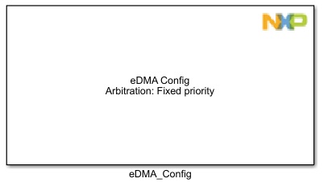
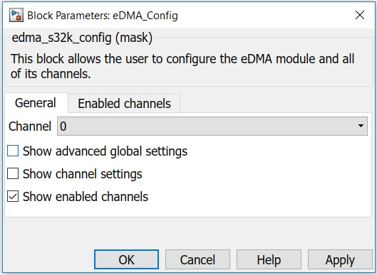
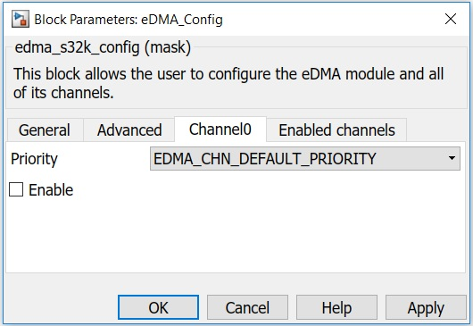
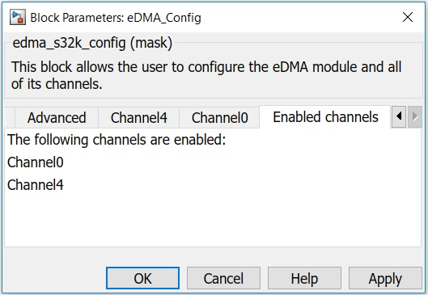

eDMA Configuration Block
This block allows the user to configure the eDMA module.
In this block you can configure individual channels, set their priority, request source and what type of arbitration the DMA should use.
Block Image
Inputs:
- None
Outputs:
- None
Parameters and Dialog Box
The block dialog consists of the following tabs:
General
Channel
Select a DMA channel from the list.
Show advanced global settings
Enable the Advanced tab where you can select arbitration and not halt on error property.
Show channel settings
Enable the ChannelX tab where you can enable the channel, select what priority it has and what request source.
Show enabled channels
Shows a list of all enabled channels so you can quickly see what channels are configured within this block.
Advanced

Arbitration
Choose from the following arbitration types:
- Fixed priority - the highest priority channel requesting service is selected to execute
- Round robin - channel priorities are ignored and channels are cycled through (from high to low channel numbers)
Not halt on error
Any error causes the HALT bit to set. Here you can choose from the following:
- True - Normal operation
- False - Halt on error; all service requests are ignored until the HALT bit is cleared
ChannelX
Priority
Choose a priority for the channel from the list.
Note: If the arbitration selected is round robin, this priority will be ignored.
DMA request source
Choose the request source for this DMA channel; if you want a software trigger of DMA, select EDMA_REQ_DISABLED (the default setting for this field).
Enable
Check it to enable the usage of current channel of eDMA.
Enabled channels
Enabled channels
This is a list of all enabled channels. After checking/unchecking the 'enable' attribute from ChannelX tab, this list will be refreshed.
Block Dependency
- None
Block Miscellaneous Details
- None